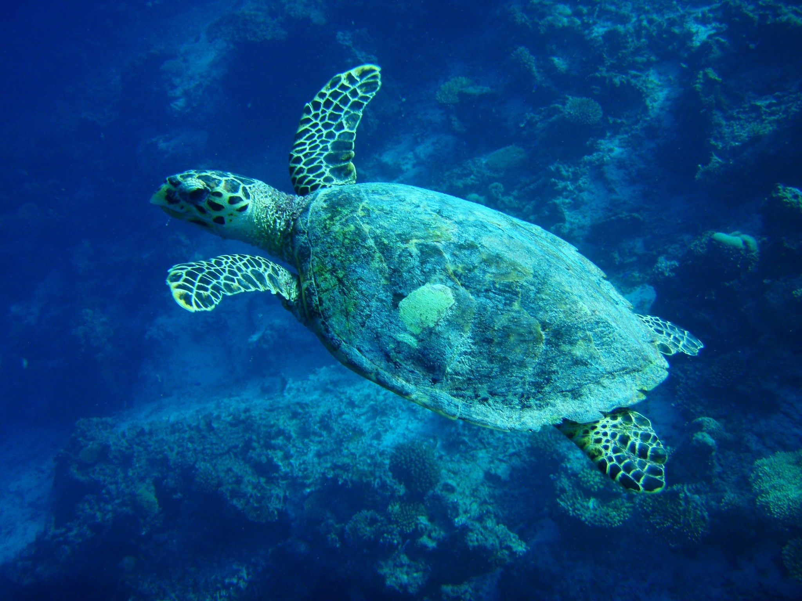
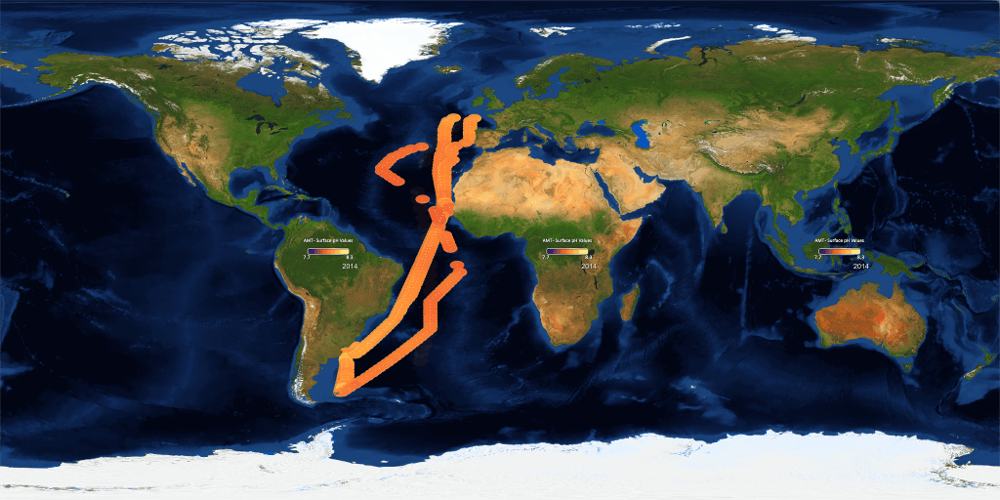

What the oceans do for us
 The largest ecosystem in the world:
- Contains 96% of the living space on Earth
- Has 80% of Earth’s living organisms
- Covers 71% of the Earth
- Provides around half of the oxygen we breathe
- Is an important and growing source of protein for a rapidly growing population
- 90% of world trade is carried across the oceans
- Holds an estimated 80% of Earth’s mineral resources
- Importantly, it is one of the largest carbon sinks.
Our impact on the oceans
"Since the industrial revolution, oceans have absorbed 25% of human produced CO2"
 Since pre-industrial times the ocean has taken up over 25% of the anthropogenic CO2 from emissions to the atmosphere from burning fossil fuels, absorbed over 90% of the heat energy from global warming and received 100% of the water from melting ice, which have led oceans to warm, acidify and loose oxygen, and sea levels to rise worldwide. As CO2 emissions increase the impact on the ocean, its physical and chemical properties, its vast biodiversity and ecosystems, as well as the risk and vulnerability of dependent ocean and coastal industries and economies, and human communities will intensify greatly (IPCC SROCC).
Since pre-industrial times the ocean has taken up over 25% of the anthropogenic CO2 from emissions to the atmosphere from burning fossil fuels, absorbed over 90% of the heat energy from global warming and received 100% of the water from melting ice, which have led oceans to warm, acidify and loose oxygen, and sea levels to rise worldwide. As CO2 emissions increase the impact on the ocean, its physical and chemical properties, its vast biodiversity and ecosystems, as well as the risk and vulnerability of dependent ocean and coastal industries and economies, and human communities will intensify greatly (IPCC SROCC).
How do we know
Marine scientists across the globe have been collecting ocean data for the past 50 years. Global Ocean Acidification Observing Network (GOA-ON) are a network of scientists who collate ocean acidification data. Plymouth Marine Laboratory contribute to GOA-ON in a number of ways including submitting data from the AMT (Atlantic Meridional Transect) which has been running since 1995.
Learn more about the AMT:
- Plymouth Marine Laboratory Atlantic Meridional Transect
- AMT - Oceanographic research cruise from the UK to the South Atlantic
Findings
Time series
Impact of ocean acidification
Human Threats
Food Security
Oyster hatcheries along the west coast of North America have seen reduced hatching success as a result of more acidic waters coming into the areas where they collect water for their hatcheries. Read more about how the changing oceans chemistry slows growth of Oyster larvae.
Tourism
Knock on impacts for coastal regions - loss of reef (for e.g.) will reduce coastal protection, reduce tourism, reduce food security, jobs...
Coastal Protection
Homes?
Ecological
Food Webs
Pteropods (also a very photogenic species), tiny free-swimming sea snails, that are important food source for fish, including salmon, are being found with their shells cracked and pitted in parts of the Southern Ocean, Arctic Ocean and ocean regions where the waters are already moving towards lower pH conditions. Read about the Pteropods at risk.
Biodiversity
Coral on the Great Barrier Reef, Australia, has shown a decrease in calcification since 1990, and a decrease in growth over the period 1988–2003.
De'ath, et al. Science 323 (2009)
116e119, https://doi.org/10.1126/science.1165283.
Cooper et al., Glob. Chang. Biol. 14 (2008) 529e538, https://doi.org/
10.1111/j.1365-2486.2007.01520.x.
Extinction
List of species we know are extinct. How many more did we never even know about?
Climate
How much more can be absorbed
What happens when it does absorb more?